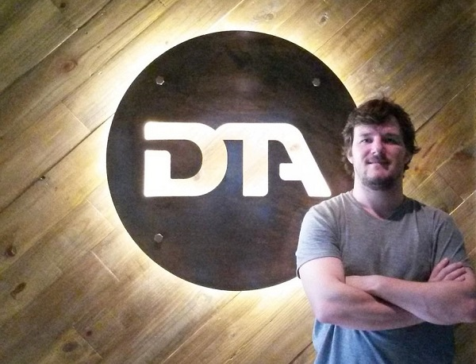

AgroTech y FinTech: dos áreas clave para la innovación latinoamericana
Por Marta Cruz, Founding Partner de NXTPLabs
Los emprendedores latinoamericanos suelen destacarse por su capacidad única para aportar soluciones creativas e innovadoras para los múltiples problemas por resolver en nuestra región. Así, las startups están teniendo un papel destacado en llevar innovación a segmentos clave de la economía, sobre todo al agregar valor a lo largo de la cadena productiva y crear empleos en los sectores de las nuevas economías. Desde NXTP Labs estamos apostando a dos sectores en particular que poseen un enorme potencial de desarrollo en Latam y que pueden producir sinergia entre sí: FinTech y AgroTech.
Dentro del segmento FinTech (tecnología para la industria bancaria y financiera), la innovación que pueden aportar las startups incluyen un amplio abanico de posibilidades. Desde fortalecer las plataformas de economía colaborativa y potenciar los créditos entre pares, hasta lograr el acceso a la bancarización a las poblaciones habitualmente están lejos de la formalidad financiera. Un ejemplo de esto es Afluenta, una startup que fue incubada en NXTP Labs, y que está transformando los servicios financieros al poner en contacto a personas que buscan conseguir crédito con aquellas que pueden financiarlos. Quienes solicitan un préstamo lo pueden hacer de manera simple, económica y sin burocracia, mientras que aquellos que los financian lo hacen obteniendo un mayor rendimiento comparado con otras alternativas de inversión.
Otro aspecto importante de los desarrollos en FinTech es su capacidad de llevar nuevos aires de innovación a las estructuras poco ágiles de las grandes corporaciones, a través de la modalidad de “open innovation”. En ese sentido, NXTP Labs lanzó este año la segunda edición de su Programa de Aceleración FinTech, destinado a seleccionar y potenciar las startups de la región que puedan proveer soluciones innovadoras y disruptivas para bancos, entidades financieras y sus clientes.
En NXTP Labs creemos que la disrupción tecnológica de los servicios financieros está llegando con fuerza a Latinoamérica gracias a la descentralización y las capacidades colaborativas de las aplicaciones móviles que irán creando cada vez más posibilidades de financiamiento e interacción.
En cuanto al segmento de tecnología aplicada a los agronegocios (AgroTech o AgTech) las posibilidades en América Latina son casi infinitas. Los pequeños productores de la región suelen estar limitados por barreras financieras y tecnológicas fundamentalmente.
Hace poco leía un artículo en el blog del Fomin sobre el modelo que ayuda a los pequeños productores de Guatemala a convertirse en emprendedores exitosos y con acceso a los mercados internacionales. Es en ese sentido, vemos que el segmento de Agrotech puede ser una gran oportunidad de desarrollo social y comercial tanto en casos a pequeña escala, como en países especializados en la producción de alimentos, como varios de los países de nuestra región.
Es por eso que nuestro próximo challenge es llevar adelante, en principio en Argentina y Uruguay, un programa de aceleración en AgTech para startups basadas en tecnología digital que agreguen valor a la industria agropecuaria y brinden soluciones innovadoras para la base de la pirámide productiva de toda la región.
Existen ya innovaciones en este segmento, tales como DTA, una startup que ya se encuentra en nuestro portfolio, y que con su producto “Pago Rural” constituye una caso testigo de una nueva generación de emprendimientos que genera una disrupción financiera en este sector.
Liderada por su fundador Patricio Williams Becú, DTA es una compañía que combina las modalidades FinTech y AgroTech y que está revolucionando el tema de financiamiento en una comunidad que es relevante para nuestra región, ya que ataca el problema de financiamiento de los pequeños productores.
Pago Rural tiene como modelo de negocio el “Value Chain Finance” mediante la cual se acuerda con los grandes vendors del mercado proveer una plataforma de préstamos a su red de valor. Así, desde la plataforma web o móvil el productor puede acceder a pagar de contado y financiarse a mejores tasas y plazos, siempre mediante financiación no bancaria.
Como dice Patricio Williams Becú, “DTA/ Pago Rural vino para lograr bajar el endeudamiento de los grandes proveedores de este sector, y mejorar el acceso al crédito de los pequeños productores”.
En otro plano de la innovación, S4 -otra startup de NXTP Labs, del segmento Fintech con foco en el Agtech- desarrolló el S4 Index, un “índice verde” promedio de cada localidad que es obtenido a partir de información satelital y que permite transferir el riesgo sistémico de sequía e inundación a través de seguros paramétricos. Este producto fue lanzado con éxito durante el 2015 y está siendo utilizado por compañías de insumos agrícolas como herramienta de gestión de riesgo y marketing.
Adicionalmente, la plataforma permite seleccionar la mejor semilla para un lote determinado, brindando a la industria la capacidad de brindar prescripciones personalizadas a nivel de lote a sus clientes. Así, S4 convierte datos técnicos de distintas fuentes, como mapas satelitales, en información accionable de alto valor agregado para la administración de riesgos.
Gracias a su capacidad innovadora, S4 pasó rápidamente de ser un startup local a regional y ahora se encuentra dando los primeros pasos internacionales. Desde principios año, Tomás Peña -uno de sus fundadores- se encuentra en Saint Louis, Estados Unidos, desarrollando el negocio con una visión global y adaptándolo al mercado estadounidense.
En síntesis, con estos dos programas de aceleración en curso, FinTech y Agrotech, estamos dando soporte a equipos emprendedores de la región, que puedan pasar de las ideas a la acción, generando soluciones a problemas de dos sectores centrales de la economía, que hoy no están siendo atendidos.

Patricio Williams Becú
Links de interés:
S4
Producto de S4
DTA/Pago Rural